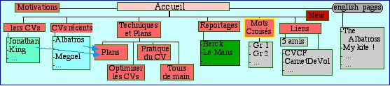

| Motivations | Premiers CVs | CVs récents | Techniques et Plans | Fêtes et Reportages | Liens, Amis cervolistes | Mots Croisés | NEW | P |
| Les oiseaux vous accueillent... |
|
| Maxime Rousselle |
 Bonjour, me voici sur la plage de Chatelaillon avec MEGOEL, mon plus grand cerf-volant, de 8 m d'envergure (sur lequel vous trouverez des détails dans la page "Megoel" des CVs récents) sous le soleil. Mais je peux voler par toutes les conditions, comme à Dieppe au jour de l'an avec LOGOS sous la neige fondue, ou plus relax à Vierzon sur l'herbe.
Bonjour, me voici sur la plage de Chatelaillon avec MEGOEL, mon plus grand cerf-volant, de 8 m d'envergure (sur lequel vous trouverez des détails dans la page "Megoel" des CVs récents) sous le soleil. Mais je peux voler par toutes les conditions, comme à Dieppe au jour de l'an avec LOGOS sous la neige fondue, ou plus relax à Vierzon sur l'herbe.

|
|
Visiteurs : |